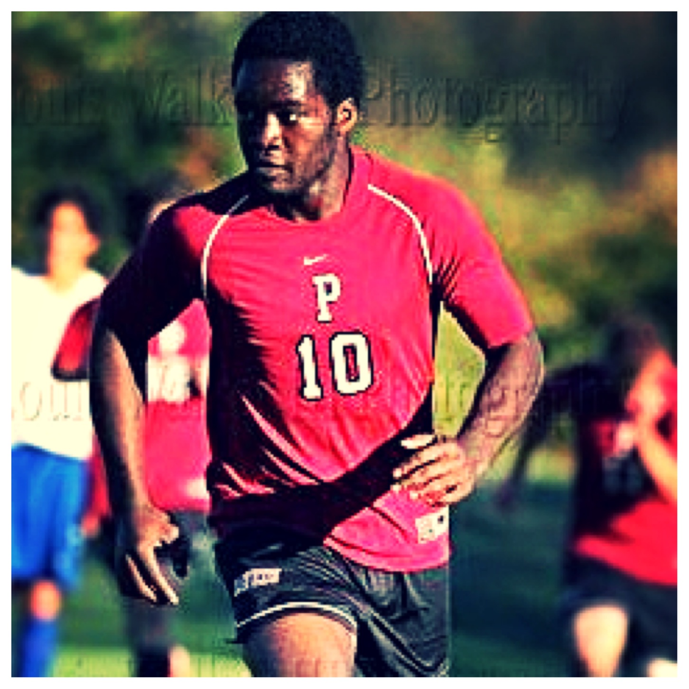
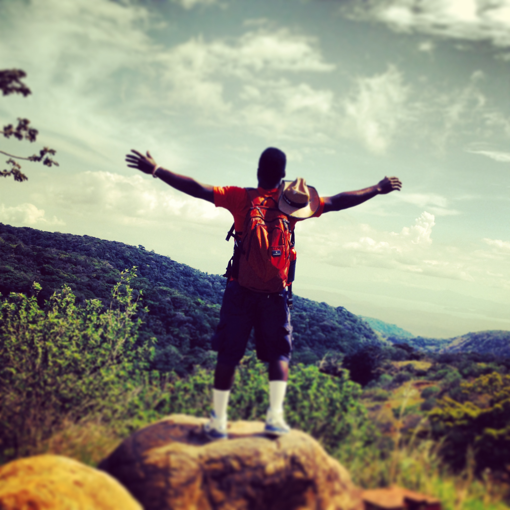
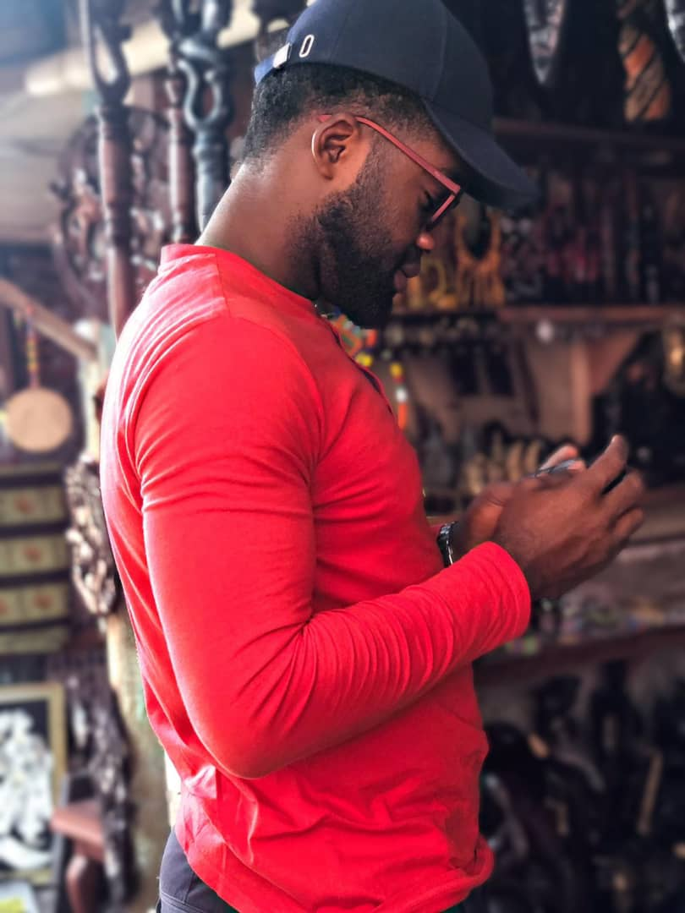
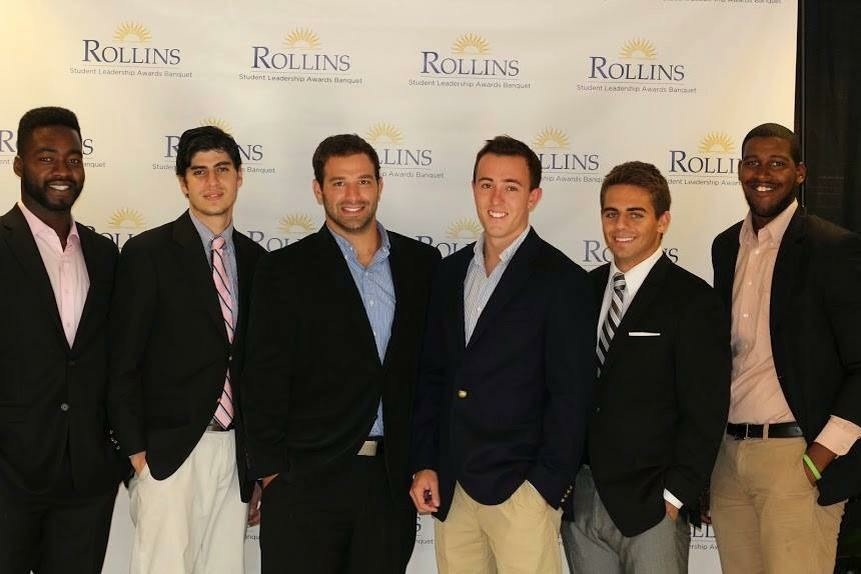
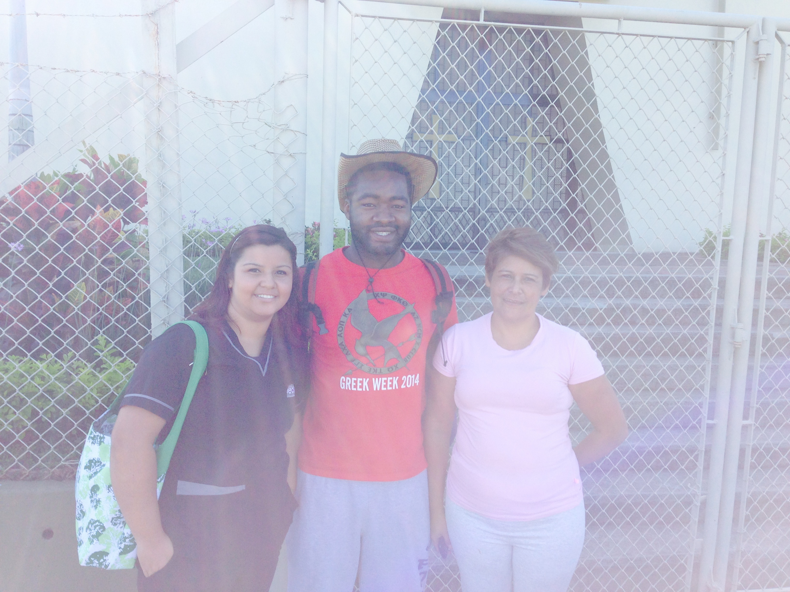
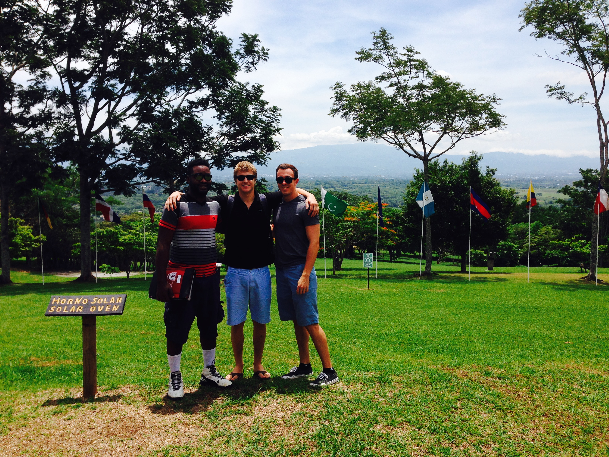
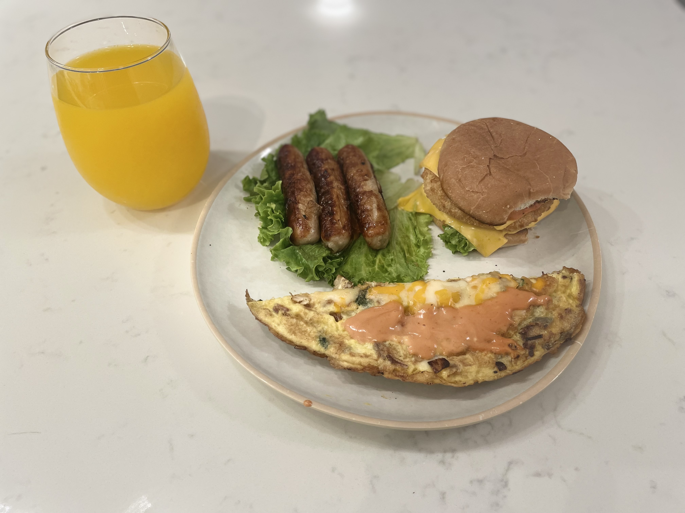
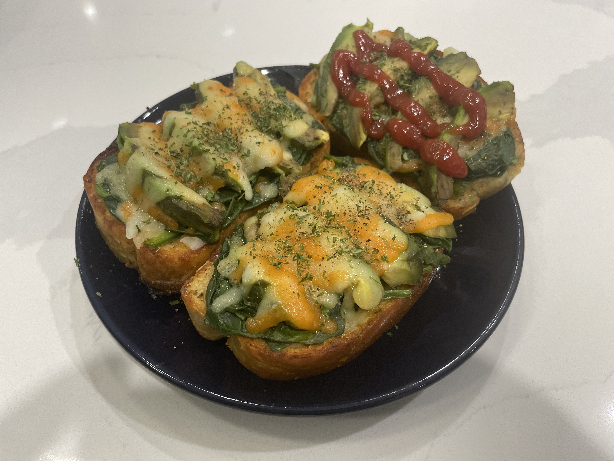
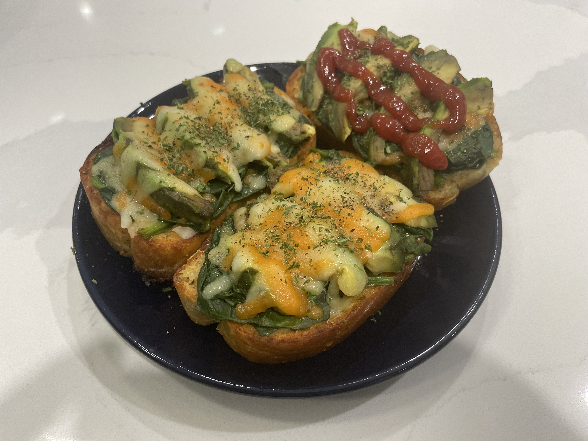

MY HOBBIES

Football - also known as Soccer - has been a defining part of my life from an early age and remains a constant source of energy and discipline. I played competitively throughout my academic years and continue to play every weekend, staying active and connected to a strong community built around the sport.
As a striker, I thrive in fast-paced, team-dependent environments where trust, timing, and execution matter. Beyond the field, I serve on an executive board focused on promoting health and wellness, with a long-term goal of developing young talent. Soccer continues to shape how I collaborate, lead, and perform—on and off the pitch.


 Travel is one of my primary avenues for growth and perspective. Having visited over 20 countries, I seek immersive experiences that allow me to engage deeply with people, cultures, and local traditions rather than observe from a distance.
Travel is one of my primary avenues for growth and perspective. Having visited over 20 countries, I seek immersive experiences that allow me to engage deeply with people, cultures, and local traditions rather than observe from a distance.
My appreciation for global diversity was shaped early through international schooling and friendships across continents. Whether exploring new cuisines, connecting with locals, or simply slowing down in unfamiliar places, travel has expanded my worldview and strengthened my ability to adapt, communicate, and build relationships across cultures.



I am intentional about giving back and contributing to causes that create meaningful impact. During college, I served on the boards of several organizations, which established a lasting commitment to community involvement and service.
Since then, I have continued to support initiatives focused on reducing homelessness, supporting orphans and widows, and creating growth opportunities for underserved and rural communities. Volunteering keeps me grounded and purpose-driven, reinforcing my belief that leadership extends beyond professional success into positive social impact.

 
Cooking is where creativity, curiosity, and connection intersect for me. My interest began early, inspired by the process of transforming simple ingredients into memorable meals—a fascination that has grown into a personal passion.

Cooking is where creativity, curiosity, and connection intersect for me. My interest began early, inspired by the process of transforming simple ingredients into memorable meals—a fascination that has grown into a personal passion.
Today, I enjoy experimenting with new recipes and hosting family and friends for barbecues and cookouts. More than the food itself, I value the sense of togetherness cooking creates. It remains one of my favorite ways to bring people together and create shared experiences.